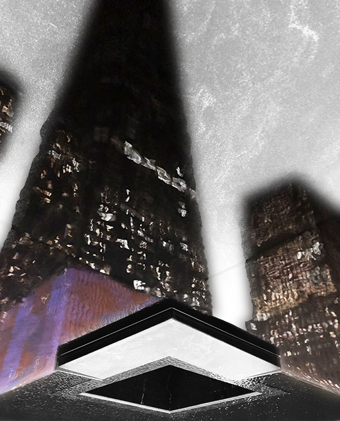
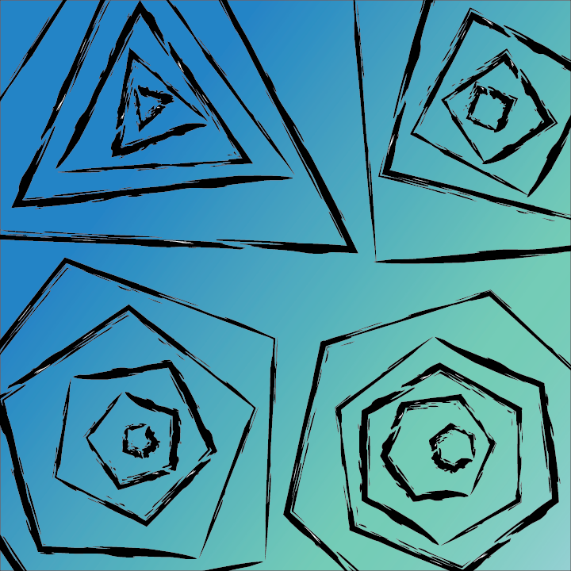
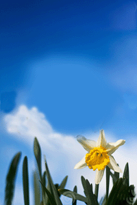

What I've done in MMP100

For MMP100 I overlayed the reflection of the World Trade Center on itself. One photo was taken at night and one photo was taken during the day. It was made using Photoshop.

I also created a phone background. I would have used it for the site background but it was too small. It was created in Illustrator with the shape tools.

I was also tasked to create an animation in Photoshop for MMP100. I had to move the bee to create different frames.